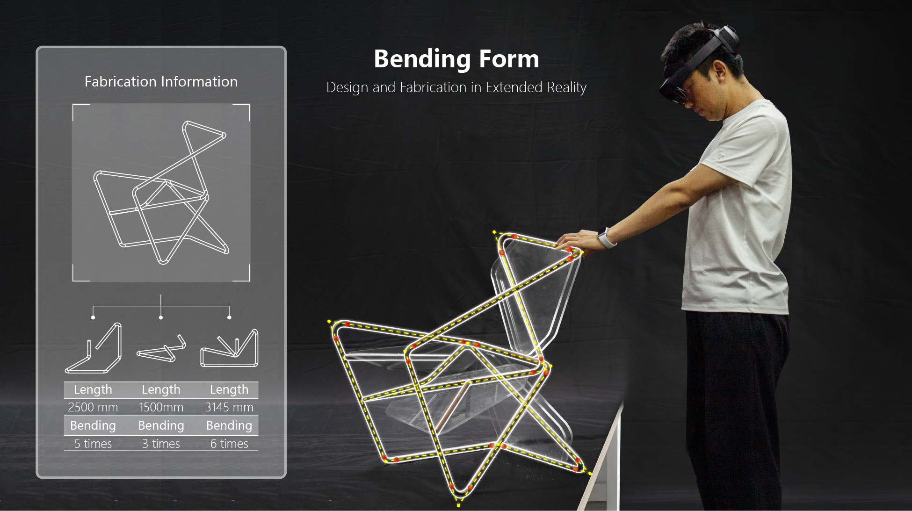
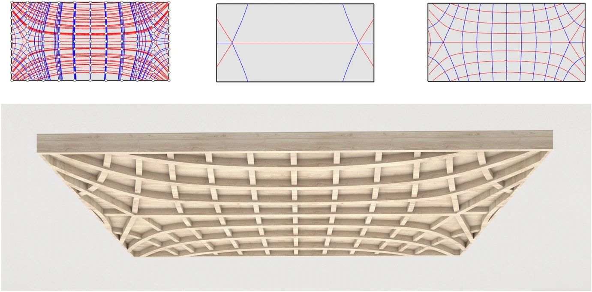
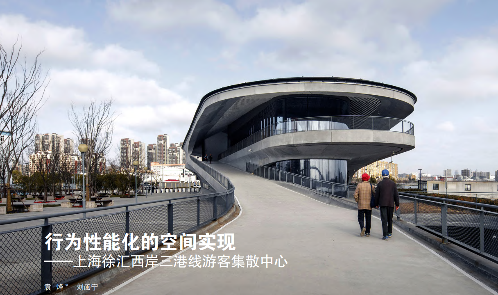
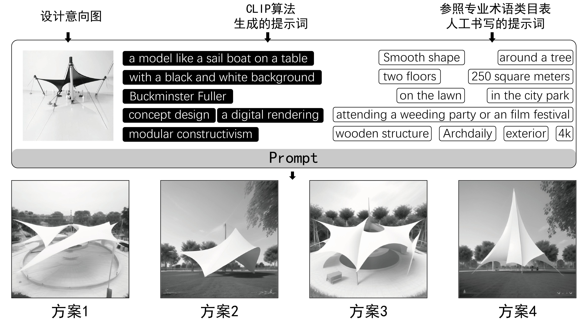

Hanning Liu 「刘函宁」
|
| CV |
Email |
Google Scholar |
| Github |
LinkedIn |
Bilibili |
|
I am a second-year Master student at the College of Architecture and Urban Planning (CAUP) at Tongji University, advised by Philip F. YUAN.
Previously, I received my Bachelor's degree in Architecture at Xi'an University of Architecture and Technology (XAUAT). I also spent time as a teaching assistant at the (2023 Summer) ZAHA Tectonism Workshop at DigitalFUTURES, the (2023 Autumn) Computational Design Class at Shanghai University, and the (2024 Spring) AI-Driven Performance-Based Tectonics Class at Tongji University.
As an AR/MR researcher, my goal is to recognize and enhance the irreplaceable strengths of human beings in the automation era. My focus is on providing architects with an immersive experience throughout the design, fabrication, and assembly processes, ultimately leading to accurate construction outcomes. To do so, I am dedicated to developing geometrical algorithms and pose tracking methods, seamlessly integrating them into an immersive software on the spatial computational platform.
Email: liuhanning [AT] tongji.edu.cn
|
|

|
Bending Form in Extended Reality: A Gesture-Based Workflow of Chair Design and Fabrication
Hanning Liu, Chao Yan, Xingjie Xie, Tianyu Zhang, Ruyi Yang, Honglei Wu, Yao Zhang, Philip F. Yuan(✉)
2024
pdf |
abstract
Methods of integrating Extended Reality (XR) technology into the fabrication and assembly process are an intensively studied topic in the fields of Human-computer Interaction and Digital Fabrication. However, existing research primarily focuses on fabrication processes rather than breaking the limitations of current computer-aided design tools. XR technology can offer an immersive environment where designers can intuitively interact with 3D models. This paper pioneers the integration of XR not only for fabrication but also for the intuitive design process. The limitation of nowadays computer-aided design tools is its restriction to manipulating geometries in only 2D screen space, or the unintuitive predefined parameters and algorithms. To address this issue, we introduce a gesture-based intuitive design workflow. This workflow features three design modes: the “Free Draw” mode, the “Polyline Fillet” mode, and the “Spline Curve” mode. Through the design and fabrication process of two bending-form chairs, we demonstrate the implementation of mathematical and geometrical manipulation algorithms on spatial computation platform using a head-mounted display device. Besides, this research also elaborates on how to convert a spline curve to a format suitable for bending, as well as how to implement the steel tube bending simulation to prevent collisions with the environment during actual bending. The results of this research illustrate the entire design and fabrication process, highlighting the potential of XR to enhance the design process through a comparison between intuitive and traditional design methods, and paving the way of further development of the design and fabrication tools on spatial computation platforms.
|
|
|
Leveraging Motion Capture System for High Accuracy AR-Assisted Assembly
Hanning Liu, Xingjie Xie, Yujiao Li, Xiaofan Gao, Honglei Wu, Yao Zhang, Philip F. Yuan(✉)
2024
pdf |
abstract
Augmented Reality (AR) allows workers to construct buildings accurately and intuitively without the need for traditional tools like 2-D drawings and rulers. However, accurately tracking worker’s pose remains a significant challenge in existing experiments due to their continuous and irregular movement. This re-search discusses a series of methods using cameras and algorithms to achieve the 6-DoF pose tracking function and reveal the relationship between each method and corresponding tracking accuracy in order to figure out a robust approach of AR-assisted assembly. This paper begins with a consideration of the possible limitations of existing methods including the image drift associ-ated with visual SLAM and the time-consuming nature of fiducial markers. Next, the entire hardware and software framework was introduced, which elaborates on how the motion capture system is integrated into the AR-assisted assembly system. Then, some experiments have been carried out to demonstrate the connection between the system set up and pose tracking ac-curacy. This research shows the possibility to easily finish assembly task based on AR technology by integrating motion capture system.
///
|
|

|
Agent-Based Principal Strips Modeling for Freeform Surfaces in Architecture
Hua Chai, Luis Orozco, Fabian Kannenberg, Lasath Siriwardena, Tobias Schwinn, Hanning Liu, Achim Menges(✉), Philip F. Yuan(✉)
2024
pdf |
abstract |
bibtex |
springer
The principal curvature (PC) of a freeform surface, as an important indicator of its fundamental features, is frequently used to guide their rationalization in the field of architectural geometry. The division of a surface using its PC lines into principal strips (PSs) is an innovative way to break down a freeform surface for construction. However, the application of PC networks in architectural design is hindered by the difficulty to generate them and flexibly control their density. This paper introduces a method for PS-based reconstruction of freeform surfaces with different umbilical conditions in the early stages of design. An agent-based modeling approach is developed to find the umbilics and increase the degree of control over the spacing of PC lines. This research can effectively expand the application range of PS-based surface reconstruction methods for freeform architectures.
@article{Chai_2024,
title={Agent-Based Principal Strips Modeling for Freeform Surfaces in Architecture},
volume={26},
ISSN={1522-4600},
url={http://dx.doi.org/10.1007/s00004-024-00765-0},
DOI={10.1007/s00004-024-00765-0},
number={2},
journal={Nexus Network Journal},
publisher={Springer Science and Business Media LLC},
author={Chai, Hua and Orozco, Luis and Kannenberg, Fabian and Siriwardena, Lasath and Schwinn, Tobias and Liu, Hanning and Menges, Achim and Yuan, Philip F.},
year={2024},
month=feb,
pages={369–396}
}
|
|

|
Spatial Implementation of Behavioral Performance: Tourist Center of Shanghai Xuhui West Coast
Philip F. Yuan(✉), Hanning Liu
2024
pdf |
abstract |
bibtex |
cnki
<正>上海徐汇西岸三港线游客集散中心是同济大学建筑设计研究院和创盟国际建筑设计有限公司的设计作品，总建筑面积为12 110 m2，其中地上两层4 310 m2，地下一层7 800 m2。该项目是对老渡口建筑品质的提升与重建。老渡口位于徐汇西岸进木港南侧，据称进木港因做木材水上运输而得名，连结着对岸的浦东三林，故而人们称该航线为“三港线”。
@article{ZWJC202401002,
author = {袁烽 and 刘函宁},
title = {行为性能化的空间实现——上海徐汇西岸三港线游客集散中心},
journal = {中外建筑},
volume = {},
number = {01},
pages = {8-13},
year = {2024},
issn = {1008-0422},
doi ={10.19940/j.cnki.1008-0422.2024.01.002}
}
|
|

|
Prompt Writing Approach in GAI Tools Aided Architectural Design: Taking Urban Camp Center Design as an Example
Hanning Liu, Hao Wu, Xingjie Xie, Menghao Yuan, Philip F. Yuan(✉)
2023
pdf |
abstract |
bibtex |
cnki
Recently, Generative Artificial Intelligence (GAI) tools combine diffusion models with prompt engineering, which can quickly generate architectural images by inputting text or images, thereby improving the work efficiency of architects. However, many architects often do not get results that match their design intent when using such tools. Therefore, the purpose of this study is to propose a systematic method of prompt writing to help users obtain results that are more in line with their design intentions. First, this paper introduces the development history of GAI technology, the concept definition of Artificial Intelligence Generated Content (AIGC), and four image-based GAI tools. Secondly, this paper adopts the method of controlled experiment, setting up 4 control groups, inputting the same text and images as prompt into the four tools respectively, and analyzing the image results generated by each tool with the consistency evaluation method of FID. Finally, this paper selects Stable Diffusion as a tool, and takes the design of urban camp center as an example to explore its role in the architectural design process, showing a set of prompt writing process in three stages: "collecting design references", "combining artificial intelligence and human conception to process a large amount of image information", and "completing the text prompt writing with reference to the architectural terminology table". In general, this paper provides a systematic prompt writing methods, so that the GAI tool can output the results that meet the architect's design intention, which greatly helps the architect to improve work efficiency.
@conference{JZSJ202310001091,
author = {刘函宁 and 吴昊 and 谢星杰 and 袁梦豪 and 袁烽},
title = {生成式人工智能工具辅助建筑设计中的提示词撰写方法研究——以城市露营地设计为例},
booktitle = {兴数育人 引智筑建：2023全国建筑院系建筑数字技术教学与研究学术研讨会论文集},
year = {2023},
editor = {},
pages = {433-436},
publisher = {华中科技大学出版社}
}
|
|
{kind=link}